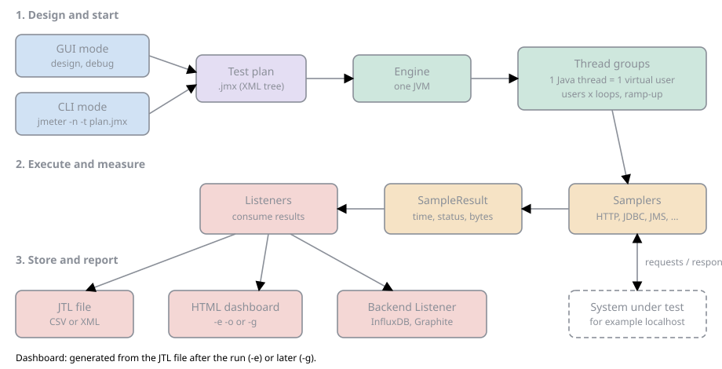

Introduction & Architecture
|
This content was generated with the assistance of AI and should be verified against the official documentation before being relied on in production. |
Baseline date: 2026-10-14. This page was written against Apache JMeter 5.6.3, the latest release on that date (released
2024-01-07). JMeter 6.0 is not released; the changes planned for it on the master branch of the project are described
as planned, never as shipped behaviour. JMeter 5.6.x runs on Java 8 or later, but the examples use Java 17 or later (21
recommended), which is also what the 6.0 branch requires. Other tools that appear later in the section are the
community JMeter Plugins Manager 2.0 (an independent catalogue, not an Apache project) and the jmeter-maven-plugin
3.8.x. This page is the map of the section: what JMeter is, how a test plan turns into load, which pieces carry the
results back, and which element families exist. Details of every piece are in the pages that follow. The examples use the
Bookshelf API of the section landing page, always aimed at localhost.
What JMeter is
Apache JMeter is an open source Java application that generates traffic from many simulated users and measures how the system under test responds. The project home page describes it as a 100% pure Java application designed to load test functional behavior and measure performance. It was first written for web applications and now covers much more. It is licensed under the Apache License 2.0 and is a top-level project of the Apache Software Foundation.
Three properties explain most of what JMeter can and cannot do.
-
Pure Java. JMeter runs wherever a compliant Java runtime runs, with no native component. Installation is unpacking an archive. The price is that every virtual user costs JVM memory and CPU, which limits how many fit in one process (see Load generator cost).
-
Protocol level. JMeter sends requests and reads responses on the wire. It does not drive a browser.
-
Test plan as data. A test is a tree of test elements stored as XML in a
.jmxfile. The same file can be edited in a GUI, run from a command line, versioned in Git and executed by a CI job.
JMeter is not a browser
The official documentation is explicit: JMeter works at protocol level. For a web application it can mimic what a browser sends (headers, cookies, form posts, embedded resources), but it does not perform all browser actions. In particular it does not run the JavaScript found in HTML pages and it does not render pages, so the time a browser would spend executing scripts and painting the page is not part of any sample. A JMeter response time is the time to send a request and receive the response, for an application whose front end does heavy client-side work that is only a part of what a user feels.
This has two practical consequences. First, single-page applications must be tested at the API level: the plan calls the
JSON endpoints the front end calls (for Bookshelf, GET /api/books?query= and POST /api/loans), not the page that
displays them. Second, front-end performance (rendering, script execution, Core Web Vitals) needs a browser-driven tool;
the Playwright, Cypress and Selenium material of this documentation (start with Choosing a Tool) covers browser automation,
and the two approaches complement each other.
Protocols in core and through plugins
The table lists what the official site and the user manual name as supported by a standard installation, and what needs an external jar or a community plugin. Anything not in the first rows should be treated as unsupported in core.
| Protocol or area | Core JMeter 5.6.3 | Remarks |
|---|---|---|
HTTP and HTTPS |
HTTP Request sampler ( |
Web applications on any server technology, REST and SOAP over HTTP. |
JDBC databases |
JDBC Connection Configuration and JDBC Request |
No driver is bundled: add your vendor’s jar to |
Messaging |
JMS Point-to-Point, JMS Publisher, JMS Subscriber |
The JMS API is included, a provider client is not: add the provider’s jars. |
SMTP Sampler, Mail Reader Sampler |
SMTP(S), POP3(S), IMAP(S). |
|
Other classic protocols |
TCP, FTP, LDAP and extended LDAP, OS Process, Java Request, JUnit Request, Bolt (Neo4j), Access Log Sampler |
Native commands and shell scripts through the OS Process sampler. |
gRPC |
Not in core |
A community plugin, covered in its own page, handles unary calls only. |
WebSocket |
Not in core |
Provided by community plugins. |
HTTP/2 |
Not in core |
Provided by a community plugin ( |
Kafka, MQTT |
Not in core |
Provided by community plugins. |
Source: Apache JMeter home page
How JMeter works
The execution model in one picture

The figure reads from top to bottom. A test plan (the .jmx file) is opened either in GUI mode, to design and
debug it, or by CLI mode, to run it. The engine inside one JVM reads the tree and starts the thread groups. Each thread
of a thread group is one virtual user and repeatedly walks the plan: every sampler sends a request to the system under
test and the response is turned into a result. Results flow to the listeners in scope, which display them or store them in
a JTL file. The HTML dashboard is generated from that file after (or, with -g, long after) the run, and the Backend
Listener can stream the same numbers to a time-series database while the test is running.
One Java thread per virtual user
JMeter uses a thread-per-user model. A thread group is configured with a number of threads, and each one is a real Java thread that executes the elements below the thread group in tree order, one after another, completely independently of the other threads. Within a thread the work is synchronous: a thread sends a request and blocks until the response arrives (or a timeout fires), then runs the next element. The official test plan page states it this way: each thread executes the test plan in its entirety and completely independently of other test threads.
Several consequences follow from this model, and later pages build on each of them.
-
Concurrency is bounded by threads. To keep 500 requests in flight at once you need 500 threads. The number of requests per second is an outcome of thread count, response time and think time, not a setting (unless a throughput element or the Open Model Thread Group is used).
-
Slow responses reduce the load. When the system under test slows down, every thread waits longer and sends fewer requests. This is the closed workload model, and it is the reason the section later explains coordinated omission and the open model.
-
Per-thread state. Variables, cookies (through the Cookie Manager) and the results of extractors live per thread. Properties, by contrast, are global to the JVM. The difference is the subject of the page on properties, variables and functions.
-
Thread groups are parallel by default. Several thread groups in one plan start together. The Test Plan element has an option to run them one at a time, and the special setUp and tearDown thread groups run before and after the regular ones.
A test plan is a tree
A test plan is a hierarchy of test elements. The position of an element in the tree defines what it applies to: a config element, timer, assertion or listener affects the samplers in its branch (its scope), and a timer or assertion placed at the top level applies to every sampler below it. For each sampler JMeter processes the elements in scope in a fixed order.
| Step | What runs |
|---|---|
0 |
Configuration elements |
1 |
Pre-processors |
2 |
Timers |
3 |
The sampler itself |
4 |
Post-processors (unless the SampleResult is null) |
5 |
Assertions (unless the SampleResult is null) |
6 |
Listeners (unless the SampleResult is null) |
Logic controllers and samplers run in tree order, and timers, assertions and processors run only when a sampler they apply to is present. Because the order is fixed by element type and not by position among siblings, putting an assertion above its sampler in the tree makes no difference. The dedicated page on execution order and scoping works through the rules and their exceptions.
A minimal saved plan looks like this. The root element carries the JMeter version that wrote it, and every element is
followed by a hashTree holding its children.
<?xml version="1.0" encoding="UTF-8"?>
<jmeterTestPlan version="1.2" properties="5.0" jmeter="5.6.3">
<hashTree>
<TestPlan guiclass="TestPlanGui" testclass="TestPlan" testname="Bookshelf smoke" enabled="true">
<boolProp name="TestPlan.functional_mode">false</boolProp>
<boolProp name="TestPlan.serialize_threadgroups">false</boolProp>
</TestPlan>
<hashTree>
<ThreadGroup guiclass="ThreadGroupGui" testclass="ThreadGroup" testname="Readers" enabled="true">
<stringProp name="ThreadGroup.num_threads">1</stringProp>
<stringProp name="ThreadGroup.ramp_time">1</stringProp>
<elementProp name="ThreadGroup.main_controller" elementType="LoopController"
guiclass="LoopControlPanel" testclass="LoopController">
<stringProp name="LoopController.loops">3</stringProp>
<boolProp name="LoopController.continue_forever">false</boolProp>
</elementProp>
</ThreadGroup>
<hashTree>
<HTTPSamplerProxy guiclass="HttpTestSampleGui" testclass="HTTPSamplerProxy" testname="Search books" enabled="true">
<stringProp name="HTTPSampler.domain">localhost</stringProp>
<stringProp name="HTTPSampler.port">8080</stringProp>
<stringProp name="HTTPSampler.path">/api/books?query=java</stringProp>
<stringProp name="HTTPSampler.method">GET</stringProp>
</HTTPSamplerProxy>
<hashTree/>
</hashTree>
</hashTree>
</hashTree>
</jmeterTestPlan>The fragment is shortened to the properties that matter here; JMeter itself writes more properties (for example
HTTPSampler.follow_redirects) and the exact set depends on the version. Always create plans through the GUI or a
generator and treat the XML as something to read and review, not to hand-write.
Source: Elements of a Test Plan
From sampler to result
When a sampler finishes it returns a SampleResult: an object recording the sampler label, the start time, the elapsed
time, the latency (time to the first byte), the connect time, the response code and message, whether the sample was
successful, the number of bytes and the response data. The post-processors and assertions of that sampler run against the
result (an assertion failure marks the sample as failed), and then every listener in scope receives it. A listener is just
a consumer of results, so the same stream can be shown in a tree, aggregated into a table, written to a file and sent to
a database at once. Listeners are therefore also the main source of load-generator overhead: see the next section.
The sample file written by a listener or by the -l option of the command line is called a JTL file. By default it is
a CSV file with a header line, one row per sample, and the columns are controlled by jmeter.save.saveservice.*
properties. An XML format exists, but it is far larger and is not used for load tests. The HTML dashboard is generated
from a CSV JTL file, which is why the later page on results files treats the column configuration carefully.
GUI mode and CLI mode
JMeter has two ways to start, and the official documentation gives a strict division of labour between them.
| Aspect | GUI mode | CLI mode (-n) |
|---|---|---|
Purpose |
Create, debug and validate the plan, record scripts, run a few users to check it |
Run the actual load test |
Started with |
|
|
Output |
Live in the listeners shown in the window |
JTL file, log file, optional dashboard |
Resource use |
Swing UI and in-memory listener data, so heavy |
Light, no UI |
Official advice |
Use it for building the plan: "Don’t run load test using GUI mode !" |
The mode for load testing, because it gives optimal results |
The user manual’s wording is that GUI mode should only be used for creating the test script and CLI mode for load
testing, and the same chapter lists the basic command-line options: -n runs in CLI mode, -t names the .jmx file,
-l names the JTL file that sample results are logged to, -j names the JMeter run log, -e generates the report
dashboard after the load test and -o names the output folder for it (which must not exist or must be empty). A first
run of a three-iteration smoke plan against a local Bookshelf API looks like this:
bin/jmeter -n -t bookshelf-smoke.jmx -l smoke.jtl -j smoke.logand prints a summary of this shape (representative output; counts and times depend on the machine and the target):
Creating summariser <summary>
Created the tree successfully using bookshelf-smoke.jmx
Starting standalone test @ 2026 Oct 14 10:30:00 CEST (1791966600000)
Waiting for possible Shutdown/StopTestNow/HeapDump/ThreadDump message on port 4445
summary = 3 in 00:00:01 = 3.0/s Avg: 24 Min: 11 Max: 52 Err: 0 (0.00%)
Tidying up ... @ 2026 Oct 14 10:30:01 CEST (1791966601000)
... end of runThe books call the second mode "non-GUI mode" (Pro ch. 3 and 5); current documentation calls it CLI mode, and this section uses that name. Installation and the full set of command-line options are covered in later pages.
The element families
Every node of the tree is a test element belonging to one of a few families. The mind map shows the families and the members that matter most; the table below it says what each family does and which later page treats it.
| Family | What it does | Examples |
|---|---|---|
Test Plan |
The root. Holds user defined variables, the option to run thread groups serially, the tearDown option and extra classpath entries. |
Test Plan |
Thread groups |
The starting point of any test: define how many virtual users run, how fast they start and how long. |
Thread Group, setUp Thread Group, tearDown Thread Group, Open Model Thread Group (experimental) |
Samplers |
Send a request to a server and wait for the response; each produces a |
HTTP Request, JDBC Request, JMS Publisher, SMTP Sampler |
Logic controllers |
Change the order or repetition of their children. |
Loop, If, Transaction, Interleave, Once Only |
Config elements |
Add to or modify requests; they apply to their branch of the tree. User Defined Variables is the exception and is processed at the start of the test. |
CSV Data Set Config, HTTP Request Defaults, Header Manager, Cookie Manager |
Pre-processors |
Run before a sampler, often to change request settings or set variables. |
JSR223 PreProcessor, User Parameters |
Post-processors |
Run after a sampler, often to extract values from the response. |
JSON Extractor, Regular Expression Extractor |
Timers |
Add a delay before each sampler in their scope. |
Constant Timer, Uniform Random Timer, Constant Throughput Timer |
Assertions |
Check that a response contains expected content; a failed check marks the sample failed. |
Response Assertion, JSON Assertion, Duration Assertion |
Listeners |
Show or save the data collected during the run. |
View Results Tree, Summary Report, Simple Data Writer, Backend Listener |
Test fragments |
Reusable blocks that run only when referenced by a Module Controller or Include Controller. |
Test Fragment |
Source: Elements of a Test Plan
The Test Plan element
The root element has a small set of settings that affect the whole run.
| Setting | Effect |
|---|---|
User Defined Variables |
Static variables for values repeated throughout the test, such as a server name. A name defined more than once takes the last definition read from top to bottom. The Test Plan itself cannot refer to variables it defines; use a User Defined Variables element to build variables from other variables. |
Run Thread Groups consecutively |
Runs the thread groups serially instead of in parallel (the |
Run tearDown Thread Groups after shutdown of main threads |
When selected, tearDown groups run after a graceful shutdown of the main threads. They do not run if the test is forcibly stopped. |
Functional Test Mode |
Saves response data and sampler data for every sample to all result files. This increases the resources needed and can hurt performance, and it does not affect CSV result files, which cannot store such data. Keep it off for load tests. |
Add directory or jar to classpath |
Adds jars or directories to the JMeter loader for this plan (additive; removing an entry requires a restart). Useful for utility jars such as JDBC drivers, but it cannot add GUI plugins. The properties |
Source: Test Plan (Component Reference)
The setUp and tearDown thread groups behave exactly like normal thread groups, except that setUp threads run before the regular thread groups and tearDown threads after they finish. A typical Bookshelf use is a setUp group that creates a test user and a tearDown group that deletes the loans created during the run.
Load generator cost
Because every virtual user is a thread and every sample produces an object, the machine running JMeter is a resource that must be managed like the system under test. A load test whose generator is saturated measures the generator, not the server. The main levers, which later pages treat in detail, are:
-
run in CLI mode and never load test from the GUI;
-
keep the number of listeners and the amount of saved data small, because each listener holds or writes every sample;
-
leave Functional Test Mode off and do not save response bodies for load tests;
-
use few assertions on large responses, since each one inspects the body;
-
write results as CSV and generate the dashboard afterwards;
-
size the heap to the load: the default heap of the launcher scripts is
-Xms1g -Xmx1g -XX:MaxMetaspaceSize=256m, changed through theHEAPorJVM_ARGSenvironment variables orbin/setenv.sh; -
when one machine cannot generate the required load, distribute the test over several JMeter servers, remembering that every server runs the whole plan.
The official user manual does not give a figure for how many threads fit on one machine, because it depends on the plan, the responses and the hardware; measure it with the actual plan.
Where JMeter fits
Functional tests and load tests
Unit and integration tests answer whether an answer is correct for one caller. Load tests answer how the system behaves when many callers arrive together: latency percentiles, throughput, error rate and saturation. JMeter is built for the second job, but because it has assertions, extractors, logic controllers and JUnit and JDBC samplers it can also run functional or integration checks: the Test Plan element even has a Functional Test Mode that records full request and response data for that purpose. The two uses should not share a plan. A functional plan has one user, many assertions and saves everything; a load plan has many users, few assertions and saves the minimum.
For Bookshelf, one .jmx file can hold both a journey with strict assertions run by a single user in CI as a smoke test,
and the same journey with relaxed assertions run by 50 users. The section builds exactly that, as the smoke profile in the first case and the load profile in the second.
Other load-testing tools
JMeter is not the only choice and the section does not teach the others. Gatling (plans written as code in a Scala, Java or Kotlin DSL), k6 (scripts written in JavaScript) and Locust (users written as Python classes) are widely used alternatives with a code-first workflow; JMeter’s strengths are the GUI for building plans, the broad protocol coverage through its samplers and plugins and the large body of existing plans and knowledge. The choice is mostly about team skills and the protocols needed. JMeter also has programmatic routes (the 5.6 Java and Kotlin DSL and the third-party JMeter Java DSL) described near the end of the section.
What changed over time
The three books used for methodology were written for JMeter 2.11, 2.12 and 3.0. The architecture described above is the same, but the tooling around it changed.
| Topic | Books (2.x and 3.0) | JMeter 5.6.3, and planned for 6.0 |
|---|---|---|
Mode names |
"Non-GUI mode" (Pro ch. 3 and 5) |
CLI mode. |
Java |
Java 7 or 8 |
Java 8 minimum for 5.6.x, 17 or later recommended; 6.0 is planned to need Java 17 or later (21 recommended). |
WorkBench |
Used to hold the recorder and non-test elements (Pro ch. 4) |
Removed in 4.0; the recording template and the HTTP(S) Test Script Recorder replace it. |
Scripting elements |
BSF PostProcessor (PTwJ ch. 3) and BeanShell pre- and post-processors (Pro ch. 3) |
BSF deprecated in 3.1 (still shipped, hidden from the menus), BeanShell discouraged; JSR223 with Groovy is the standard. |
SOAP/XML-RPC sampler |
Present (Cookbook ch. 4; PTwJ ch. 7) |
Removed in 3.2; send SOAP with an HTTP Request and an XML body. |
Monitor Results listener |
Present (PTwJ ch. 5; Pro ch. 9) |
Removed in 3.2. |
Open workload |
Not available in core; plugin thread groups and the Throughput Shaping Timer (Cookbook ch. 6) |
Open Model Thread Group (experimental) since 5.5. |
GraphQL |
Not available |
GraphQL HTTP Request since 5.4. |
Java and Kotlin DSL |
Not available |
Experimental DSL in 5.6. |
MongoDB elements |
Present (Cookbook ch. 4; PTwJ ch. 7) |
Deprecated; planned for removal in 6.0. |
Summary
-
JMeter is a pure Java, protocol-level load generator. It is not a browser: no JavaScript execution, no rendering.
-
A test is a
.jmxtree; each virtual user is one Java thread that executes it, blocking on every request. -
Samplers produce
SampleResultobjects that post-processors, assertions and listeners consume in a fixed order; the results end up in a JTL file, the HTML dashboard or a time-series database. -
Design and debug in GUI mode; run the load in CLI mode.
-
The load generator is part of the experiment: keep listeners, assertions and saved data small, and watch its CPU and heap.
References
-
apache/jmeter (planned 6.0 changes)
-
Bayo Erinle, JMeter Cookbook, Packt, 2014, chapter 4 (SOAP and MongoDB samplers) and chapter 6 (plugin thread groups, Throughput Shaping Timer): https://www.packtpub.com/en-us/product/jmeter-cookbook-9781783988280
-
Bayo Erinle, Performance Testing with JMeter, 2nd edition, Packt, 2015, chapter 1 (performance testing concepts), chapter 3 (BSF PostProcessor), chapter 5 (Monitor Results) and chapter 7 (SOAP and MongoDB samplers): https://www.packtpub.com/en-us/product/performance-testing-with-jmeter-2nd-edition-9781784394813
-
Sai Matam and Jagdeep Jain, Pro Apache JMeter, Apress, 2017, chapters 3 and 5 (non-GUI mode, BeanShell processors), chapter 4 (WorkBench) and chapter 9 (Monitor Results): https://link.springer.com/book/10.1007/978-1-4842-2961-3